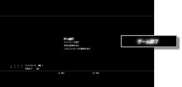

ゲーム > PlayStation®2 / PlayStation®規格ソフトウェアを遊ぶ > ゲームを始める／終了する
ゲームを始める／終了する
ゲームを始める
ディスクをセットすると自動的にゲームが起動します。
ゲームを終了する
ゲーム中に、ワイヤレスコントローラのPSボタンを押し、表示された画面で［ゲーム終了］を選びます。

重要
PlayStation®2規格ソフトウェアの起動／終了時は、コントローラ番号の割り当てが解除されます。次の手順で、コントローラ番号を割り当ててください。
ゲーム起動時 ： ゲームの画面が表示されたら、コントローラのPSボタンを押す。
ゲーム終了時 ： 画面にXMB™が表示されたら、コントローラのPSボタンを押す。
ヒント
PlayStation®2 / PlayStation®規格ソフトウェアのデータをセーブするには、仮想メモリーカードを作成する必要があります。仮想メモリーカードについて詳しくは、 （ゲーム）＞［PlayStation®2 / PlayStation®規格ソフトウェアを遊ぶ］ ＞ ［セーブデータについて］をご覧ください。
（ゲーム）＞［PlayStation®2 / PlayStation®規格ソフトウェアを遊ぶ］ ＞ ［セーブデータについて］をご覧ください。
ゲームをリセットする
ゲーム中に、ワイヤレスコントローラのPSボタンを押し、表示された画面で［ゲームリセット］を選びます。PlayStation®2 / PlayStation®規格ソフトウェアで遊んでいるときだけ操作できます。
重要
- PS3™では、一部のPlayStation®2およびPlayStation®規格ソフトウェアが、従来のPlayStation®2およびPlayStation®と異なる動作をする場合や、適切に動作しない場合があります。
- また、一部のPS3™では、PlayStation®2規格ディスクの再生に対応していません。詳しくは［再生できるディスクの種類について］、各地域のWebサイト、または製品同梱の取扱説明書をご覧ください。